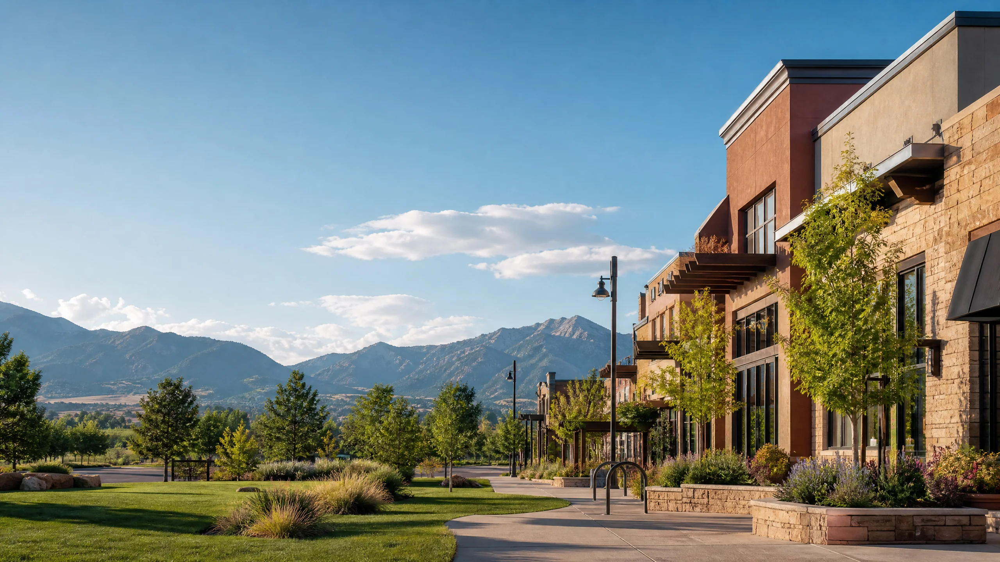

01 · REPEAT
Ongoing workwear and uniforms
Build a consistent program by identifying logo placement, staff roles, garment standards, size needs, and how future reorders should be handled.
Briargate · Custom apparel
Custom screen printing Briargate Colorado Springs for businesses, events, merchandise, and group apparel. Start with a detailed ARK quote.

A Briargate apparel brief with a purpose
Briargate custom apparel can be anything from a refreshed employee program to a youth-group order, a neighborhood event tee, or the first version of a local merchandise line. A useful quote makes those distinctions visible before a garment or print method is selected.
ARK is based in Colorado Springs and serves Briargate projects through a clear intake process. Tell us what the garments represent, who will wear them, and the production details you already know, and we can shape a practical next step.

Set the program up to repeat well
These are general planning examples; no claim is made about ARK relationships with Briargate organizations, schools, teams, or facilities.
01 · REPEAT
Build a consistent program by identifying logo placement, staff roles, garment standards, size needs, and how future reorders should be handled.
02 · RALLY
For a shared event or cause, define the artwork, date, attendee count, size distribution, and any back-print or sponsor requirements.
03 · INTRODUCE
For a first product drop, explain the expected customer, garment direction, artwork coverage, quantity, and whether the order is a test run.
Get past the generic tee request
Clear early decisions help ARK recommend a garment and production approach that fits the project instead of forcing a one-size-fits-all solution.
Quote-first workflow

Choose the finish after the brief
The garment changes the way color, texture, coverage, and durability are experienced. Use the project brief to decide whether traditional screen printing, DTF, embroidery, water-based ink, or discharge supports the result you want.
Use the quote form to describe the project. These service pages can help you understand the production conversation before you submit it.
Questions before you quote?
Short answers to the decisions that make a custom-apparel request easier to scope.
Yes. Include the garment options, colors, quantities, and logo placements so the production plan can account for each style.
An estimate is enough to start. Note the expected range and any minimum or maximum constraints in the quote request.
Include the expected first run, reorder cadence, garment standards, and staff or role variations to begin the conversation.
ARK is based in Colorado Springs and serves Briargate through its quote-led production workflow.
Start your project
Share your artwork, garment direction, quantity, print locations, and deadline. ARK will turn those details into a clear production recommendation for your project.